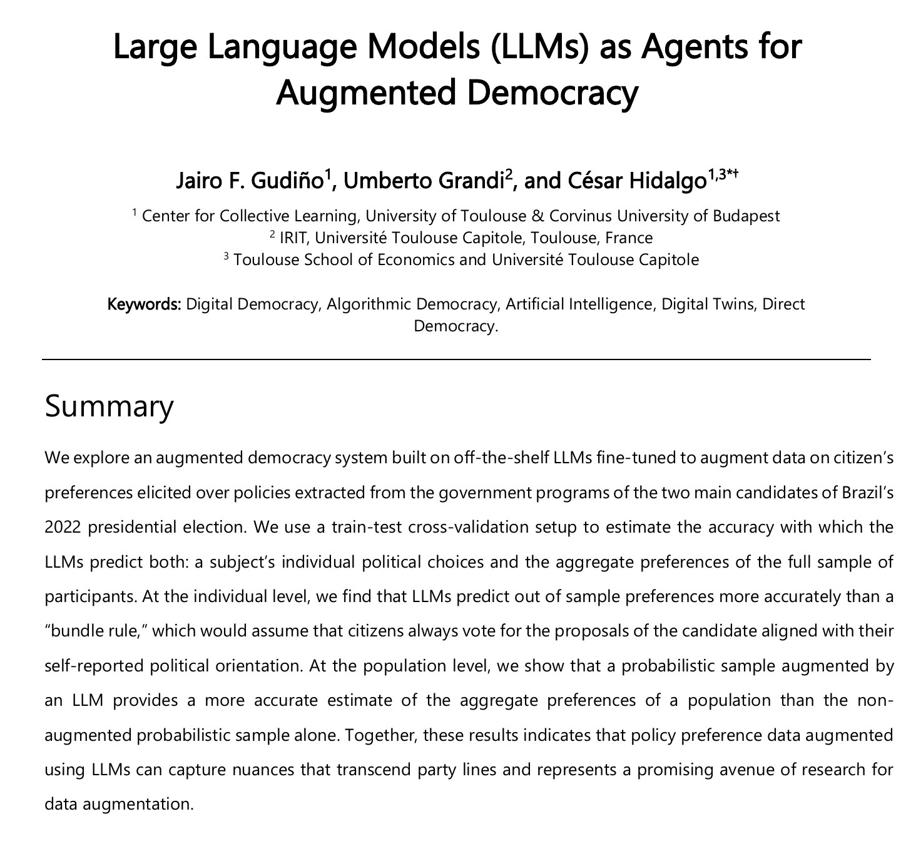
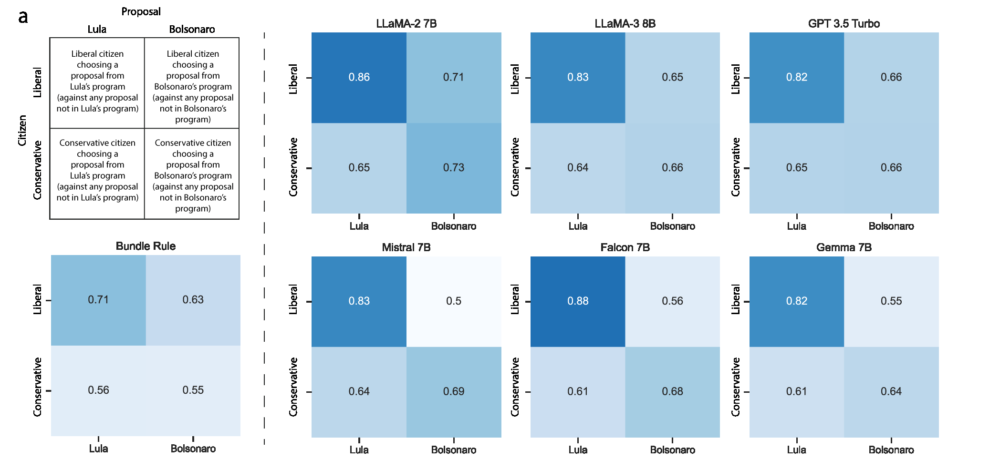
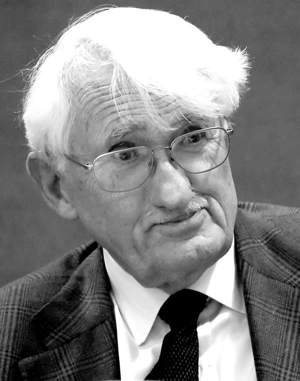
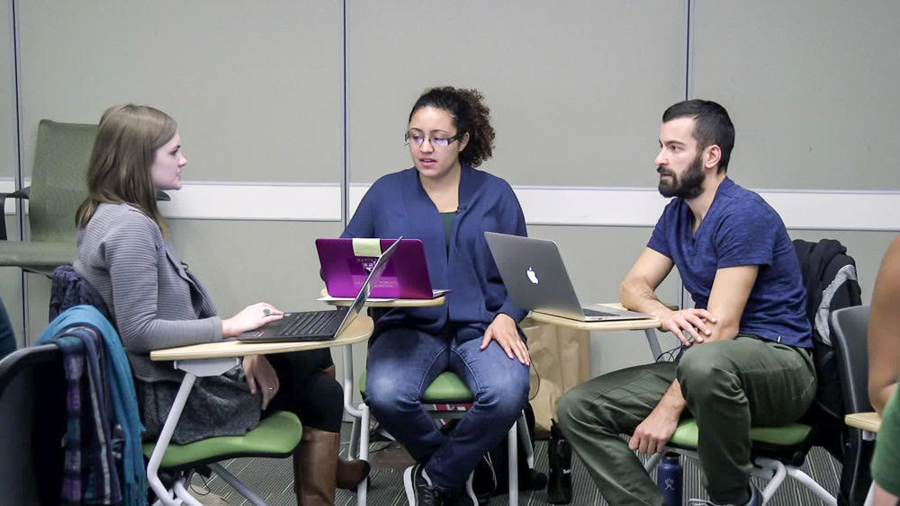

IA y Democracia 2026 — Semana 14
«Un avatar entrenado con mis respuestas me representa mejor que mi diputado.»
Volvemos a votar al final del jueves.
César Hidalgo, TED (2018) · Gudiño-Rosero, Grandi & Hidalgo (2024)
«No necesitamos tecnología de comunicación, sino tecnología de aumentación.»
— César Hidalgo
▶ 06:59 – 09:44 · 2 min 45 s
Fíjense en tres cosas: nueve proyectos de ley al día, un representante personalizado para cada uno y el paquete que no te satisface · Charla completa (15 min)


Daniel Innerarity, Congreso Futuro (2024)
Innerarity (2024), ¿Sobrevivirá la democracia a la inteligencia artificial? · guía de estudio
«Podemos querer ser mejores de lo que de hecho somos.»
— Daniel Innerarity
▶ 06:56 – 09:22 · 2 min 25 s
Fíjense en tres cosas: la ley de Massachusetts sobre la historia salarial, la natalidad de Arendt y la brecha entre lo que declaramos y lo que hacemos · Charla completa (15 min)
Si el avatar acierta más que el paquete, representa mejor.
El problema de la democracia es de ancho de banda.
Acertarle a quien fuiste no es representar a quien quieres ser.
El problema de la democracia es que no sabemos lo que nos conviene.
Un avatar no parte de cero: parte de un modelo con su propio mundo.
Los seis modelos aciertan más con liberales que con conservadores, y más con universitarios que con quienes no lo son.
Los modelos simulan mejor la opinión estadounidense que la chilena. En Chile fallan más con mujeres, baja escolaridad y religiosos.
Abeliuk, Gaete & Bro (2026), EPJ Data Science · encuesta CEP n.º 88 frente a ANES 2020 · el riesgo: injusticia epistémica con las sociedades subregistradas
The Economist (2026), AI models' values are very different from most people's · PDF
¿Y si la IA no solo sumara, sino que ayudara a deliberar? Evans & Weyl (2026) · MiroFish
Contabilidad estándar y línea de montaje: la corporación por divisiones.
Protocolos apilados: organismos cooperativos que fijan estándares.
Ubicar por posición, no por etiqueta. Ponderar cómo cada aporte incide en los demás.
La fábrica electrificada rindió poco mientras conservó el diseño de la era del vapor · Evans & Weyl (2026), «In the image of their tools»
Personas y propuestas en un mismo plano, aprendido de los votos de la sala.
Sube la propuesta que apoyan grupos que suelen discrepar, no la que suma más.
Mil copias idénticas caen en un solo punto: mueven la mayoría, casi no el puente.
El puente sigue el algoritmo publicado de Community Notes y la lógica de Polis
Vota las propuestas sin hablar con nadie: la línea base.
Los mismos agentes en una red social simulada, varias rondas y réplicas.
La pregunta: ¿deliberar acerca al avatar a su humano, o lo empuja hacia los valores del modelo? · MiroFish, código abierto
| Objeción | Respuesta desde la IA | Lo que queda abierto |
|---|---|---|
| ¿Son tuyas? | El avatar se entrena con lo que declaras, no con tus huellas. | Lo que declaras también se forma afuera. |
| Siempre son pasadas. | Ninguna: el avatar aprende de quien fuiste. | El yo aspiracional sigue fuera del modelo. |
| Sumar no es deliberar. | El puente premia lo que comparten grupos distintos; en MiroFish los agentes conversan. | ¿Conversan como ustedes, o como el modelo? |
Análisis avatares vs. humanos, Viña · hoy vemos los de esta sala

Una decisión es legítima no solo porque cuenta votos, sino porque la precede una deliberación pública abierta, informada y libre de coacción.
Jürgen Habermas · legitimidad por el proceso (paráfrasis)
James Fishkin, Center for Deliberative Democracy (Stanford)
¿Un avatar entrenado con tus respuestas de antes habría cambiado así?
Fishkin, Siu, Diamond & Bradburn (2021), American Political Science Review
Hidalgo y Gudiño-Rosero et al.: el avatar acierta más que el paquete.
Tu avatar contra ti: los datos de esta sala.
Innerarity: preferencias pasadas, sumar no es deliberar.
Abeliuk, Gaete & Bro y The Economist: ¿el avatar de quién?
Pitkin (Semana 13): representar no es reflejar.
Acertar no es lo mismo
que representar.
¿O sí?